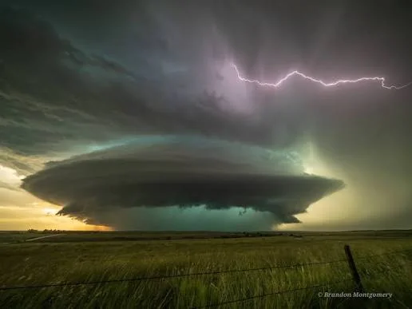

O Que é a Meteorologia?
A meteorologia não é apenas a previsão do tempo que passa na TV; é a ciência exata que estuda a atmosfera terrestre e como ela interage com o nosso planeta. Muito baseada em física e matemática, ela decodifica a energia do Sol, a pressão do ar e a umidade para entender o comportamento dinâmico do céu.
Para quem olha de fora, pode parecer um universo cheio de fórmulas complexas, mas o seu propósito no dia a dia é simples: antecipar os movimentos da natureza para proteger vidas e conectar você à grandiosidade do nosso ecossistema.

Como o Céu Funciona?
Tudo começa com o aquecimento solar. O sol aquece o solo, que por sua vez esquenta o ar logo acima dele. Como o ar quente é mais leve, ele começa a subir, carregando umidade invisível.
Conforme ganha altitude, a temperatura cai, fazendo essa umidade se condensar em gotículas visíveis. É aí que o espetáculo começa a ganhar forma, transformando vapor em imensas estruturas atmosféricas.

A Engenharia da Previsão
Prever o tempo exige inteligência humana e tecnologia de ponta. É aqui que entram os profissionais da área e os centros de monitoramento espalhados pelo Brasil, como o INMET em âmbito nacional, o CGE em São Paulo e o SIMEPAR no Paraná, que analisam dados em tempo real para emitir alertas e compreender o comportamento regional da atmosfera.
Além dos órgãos oficiais, o trabalho voluntário também é essencial: a PREVOTS é uma equipe de meteorologistas voluntários que registra eventos de tempo severo no Brasil.
Para capturar dados detalhados da atmosfera em campo, utiliza-se um arsenal de alta precisão tecnológica:
- Torre de Radar: Equipamento responsável por disparar ondas de rádio e detectar a presença e a intensidade de precipitações e estruturas convectivas em um raio de cerca de 200 km ou mais, conforme o modelo do radar.
- Balão Meteorológico: Um balão de látex carrega uma radiossonda, pequeno equipamento que mede pressão, temperatura, umidade e vento durante a subida e transmite os dados por rádio.
- Satélites Meteorológicos: Olhos no espaço que monitoram o deslocamento de grandes frentes frias, tempestades e o comportamento global dos ventos em tempo real.
- Estações Meteorológicas: Conjuntos de sensores terrestres que registram de forma contínua a temperatura, direção do vento, índice pluviométrico e pressão local.

A Ciência dos Dados
Quando olhamos para tempestades severas, precisamos entender os motores invisíveis e os parâmetros físicos que moldam a atmosfera:
- Temperatura: Grau de agitação térmica do ar, determinante para o gradiente de energia da troposfera.
- Ponto de Orvalho: Temperatura na qual o vapor de água presente no ar se condensa em líquido; indica diretamente o teor de umidade disponível.
- Pressão Atmosférica: O peso exercido pela coluna de ar sobre a superfície, fundamental para identificar centros de alta e baixa pressão.
- CAPE: Energia Potencial Convectiva Disponível; o combustível em forma de calor e umidade acumulada que alimenta a ascensão rápida das tempestades.
- Cisalhamento: Mudança abrupta na velocidade e/ou na direção do vento em diferentes níveis de altitude da atmosfera.
- Helicidade: Medida da rotação tridimensional disponível no vento em camadas baixas, essencial para o desenvolvimento de mesociclones.

A Dinâmica dos Extremos Atmosféricos
Compreender a física por trás da atmosfera revela como o equilíbrio térmico pode dar lugar a fenômenos de grande impacto. Quando os índices de instabilidade se elevam, formam-se estruturas capazes de produzir ventanias intensas e rajadas destrutivas. Conheça mais sobre os eventos severos e descubra a mecânica por trás dos fenômenos mais extremos do planeta.
Olhe Para Cima
O céu está o tempo todo conversando com a gente através de formas, cores e texturas. Cada estrutura no horizonte carrega consigo uma história de como se formou e onde vai parar. Quer aprender a identificar a diferença entre um Cumulus inofensivo e uma Cumulonimbus carregada, direto da sua janela? Conheça mais sobre as nuvens e mude para sempre a forma como você enxerga o horizonte.